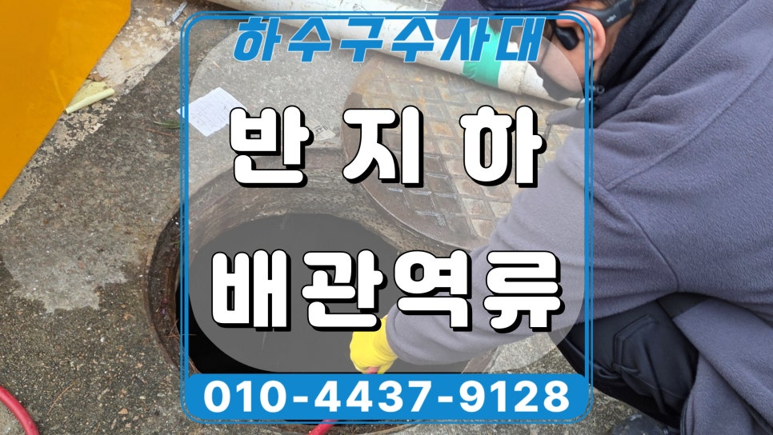
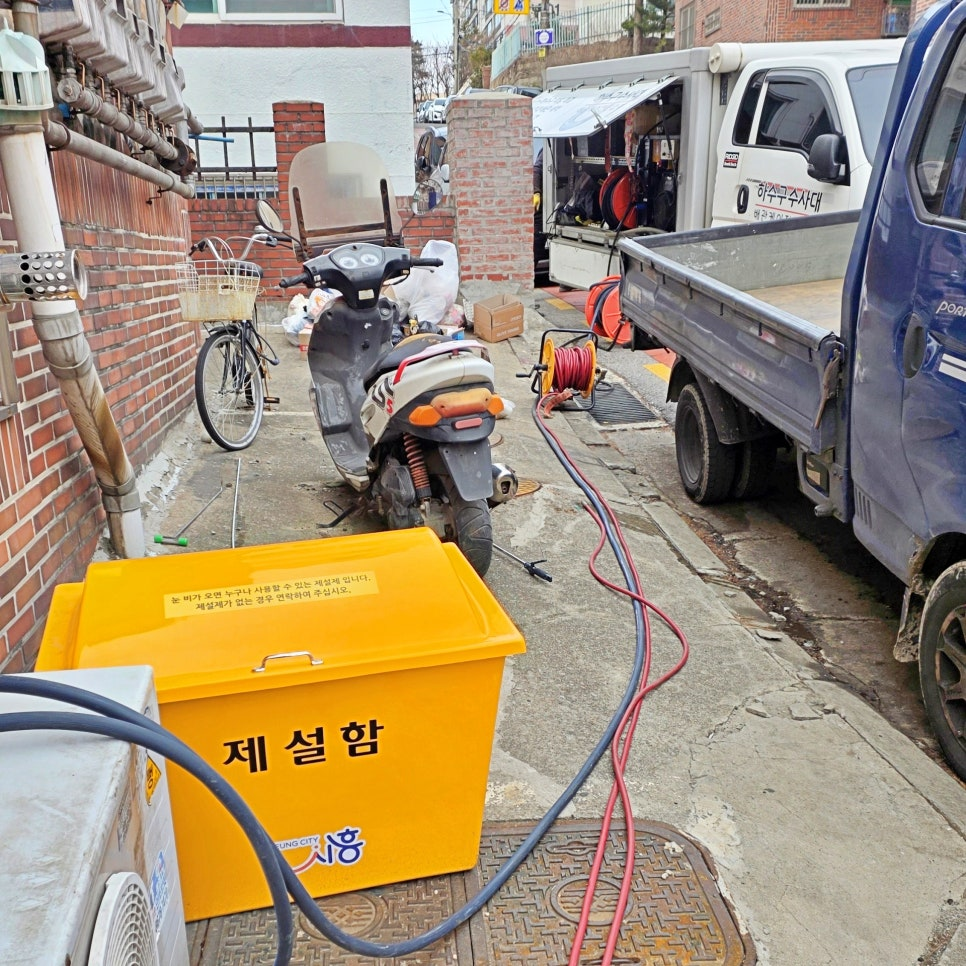
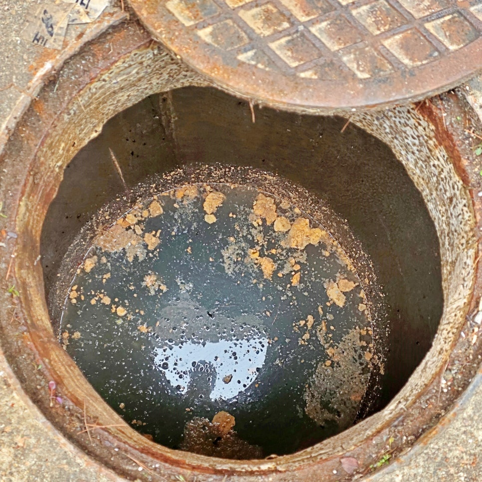
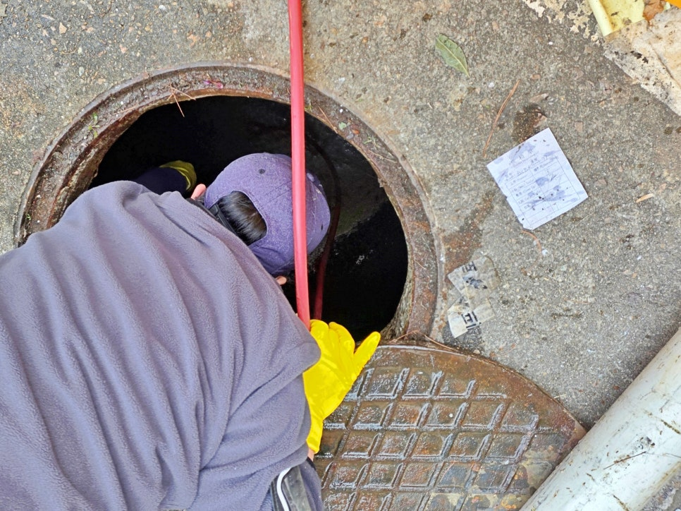
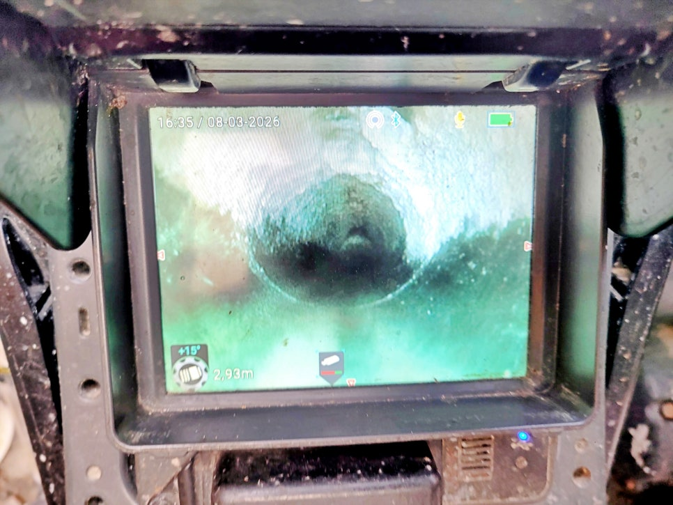
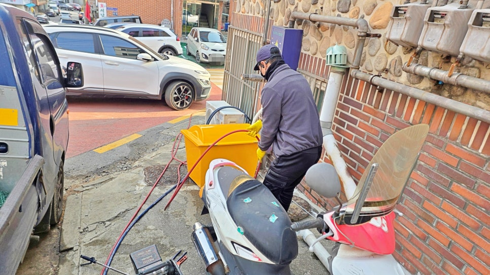
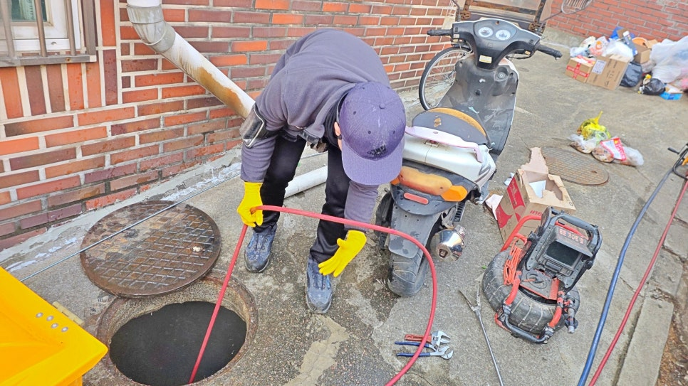

🏠 시흥 거모동 화장실 배수구막힘, 맨홀 배관 고압세척으로 뚫어드림
시흥 하수구막힘 전문 시공 후기

📋 작업 개요
- 위치: 시흥
- 서비스 유형: 하수구막힘, 배관막힘, 맨홀막힘, 역류해결, 뚫는업체, 배관청소, 고압세척
- 작업 일시: 2026. 4. 5. 19:25
- 업체명: 하수구수사대 (010-5615-2118)
🔍 문제 상황
시흥시 거모동 다세대 반지하
화장실 배수구막힘 역류 원인
고압세척으로 뚫어드렸어요.!!!
환영합니다.
시흥 거모동 화장실 배수구막힘 역류
맨홀 배관청소업체 하수구수사대
인사드립니다.
오늘 저희가 준비한 현장 후기는
시흥시 거모동 다세대 주택의
반지하 세대인데요.
화장실 바닥 배수구에서 갑자기
오수가 역류하는 현상이 발생해
긴급히 출동한 사례입니다.
시흥 거모동 반지하 화장실 배수구막힘 현장
시흥 거모동 화장실 배수구막힘
현장에 도착해 배관 상태부터
꼼꼼하게 살펴보니 단순한
역류라기보다 메인 하수관이
막혀 발생한 것이었는데요.
과연 이번 현장은 저희가 어떻게
뚫어드렸는지 지금부터 자세히
소개하겠습니다.
거모동 화장실 바닥 배수구역류 원인은?

🔎 원인 분석
💡 전문가 진단: 시흥시 거모동 다세대 반지하화장실 배수구막힘 역류 원인고압세척으로 뚫어드렸어요.!!!
오수맨홀에서 시관로 구간이 막힌 상태
먼저 내시경 카메라를 투입해
배관 내부 상태를 점검해 보니
내부 통로에 많은 기름과 오물이
오랫동안 쌓여 통수가 제대로
안되는 것을 알 수 있었는데요.
시관로 방향 배관 내부 점검 중
이후 뒷마당 오수 맨홀을 열어
내시경 카메라로 다시 점검해
시관로로 나가는 구간이 오히려
더 심하게 막혀 역류했다는 것을
찾아냈습니다.
이번 시흥 거모동 화장실 배수구막힘
현장은 300mm 비교적 대구경
큰 배관이었는데요. 직경 크기만
크다고 해서 막히지 않는 것이
아니고 청소 관리를 하지 않으면
언제든지 막힐 수 있다는 것을
잘 보여준 현장이었습니다.
특히 이런 구조에서는 가장 낮은
위치의 세대가 먼저 영향을 받는
경우가 많은데요.
반지하 화장실 바닥 배수구역류
이유도 바로 맨홀에서 나가는

🔧 작업 과정
메인 배관이 막히면서 제일 먼저
문제가 발생한 것입니다.
거모동 맨홀 배관 고압세척 청소 작업
고객님께 사실 관계를 자세하게
설명을 드리고 시관로로 나가는
구간부터 고압세척 청소 작업을
시작했는데요.
막혀 있던 구간에 삽관한 노즐이
강한 수압으로 뚫고 들어가며
배관 내벽에 쌓인 묵은 기름까지
깨끗하게 제거해 정말 많은 기름이
쏟아져 나오기 시작했습니다.
시흥시 거모동 화장실 배수구막힘
1차 고압세척으로 시관로 방향이
시원하게 뚫리자, 반대 방향
반지하 세대 쪽으로 배관 청소를
묵은 기름이 고압세척으로 제거되는 과정
세척 작업 중간마다 내시경 카메라로
배관 내부 상태를 다시 확인해 가며
진행해 내벽에 붙어있던 묵은 기름까지
깨끗하게 제거했습니다.
내시경 화면을 확인하며 배관 청소 진행함
2차 고압세척 청소 작업은 1차보다
비교적 수월하게 마쳤는데요.
반지하 세대 화장실로 돌아가
많은 물을 붓는 배수 테스트를
진행해 더 이상 역류 현상없이
시원하게 내려가는 모습을
고객님과 함께 확인했습니다.
고압세척 청소 후기를 마치며
배관 내벽이 깨끗해진 모습
이번 시흥 거모동 화장실 배관역류
원인은 오수맨홀에서 시관로 나가는
구간이 막혀 발생한 것인데요.
시흥 고압세척 배관청소 전문업체인
하수구수사대가 문제의 원인을
정확히 찾아 해결해 드려 오랜 시간


✅ 작업 완료
재발없이 사용할 수 있게 되었습니다.
이처럼 반지하 화장실 배수구막힘
문제나 역류 원인을 해결하고 싶은
분들은 언제든지 하수구수사대로
연락하시기 바라며
오늘의
"시흥 거모동 화장실 배수구막힘"
고압세척 청소 후기를 정독해 주셔서
감사합니다.
#시흥거모동화장실배수구막힘 #시흥거모동하수구업체 #시흥거모동화장실하수구막힘 #시흥거모동반지하하수구역류 #거모동배관청소업체 #시흥배관고압세척업체 #시흥배관청소업체추천




⚠️ 하수구 배관 막힘 예방 및 관리 가이드
- ✅ 머리카락, 비닐, 물티슈 등 물에 분해되지 않는 이물질은 하수구 유입을 절대 금지해 주세요.
- ✅ 하수구 거름망을 씌우고 모여진 이물질은 주기적으로 쓰레기통에 바로 비워주셔야 합니다.
- ✅ 배관 노후가 심할 경우 이물질이 더 쉽게 걸리므로 주기적인 배관 세척(고압세척 등)을 권장합니다.
- ✅ 작업 후 1년 이내 재발 시 하수구수사대에서 무상 A/S 보증 서비스를 제공합니다.
💡 핵심 정리
- 확실한 장비 작업(내시경 점검 및 샤프트 스케일링)으로 원인을 뿌리 뽑습니다.
- 작업 후 1년 이내에 동일한 부위 재발 시 100% 무상 A/S 서비스를 보장합니다.
- 서울 · 경기 · 인천 전 지역에 24시간 언제든 긴급 출동할 수 있도록 항시 대기 중입니다.
❓ 자주 묻는 질문 (FAQ)
🚨 시흥 하수구막힘 문제로 고민이신가요?
정확한 원인 진단과 확실한 시공으로 재발 없는 해결을 약속드립니다.
24시간 긴급 출동 | 서울 · 경기 · 인천 전지역 | 1년 내 재발 시 무상 A/S